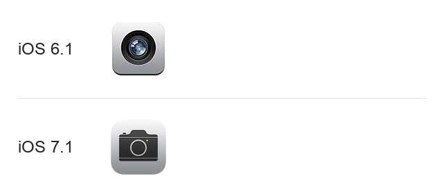
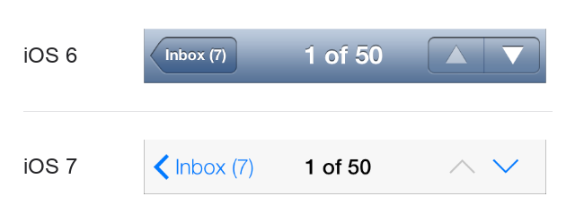
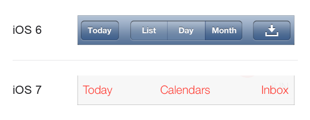
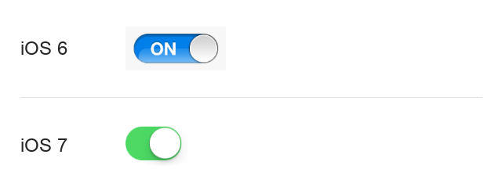

把 iOS 6.1 和 iOS 7.1 的相机图标放在一起，先别急着判断哪一个更新、更好看。旧图标正中是一枚放大的镜头，外圈、玻璃和镜片上的反光都画得很细。新版省去了大部分光学细节，却添上了相机的机身轮廓。这次简化有减也有加。旧版请人从一个零件认出相机，新版给人看一台相机的正面轮廓。 只把它概括成“从立体变扁平”，会错过设计师真正值得研究的选择。Apple《iPhone 使用手册》iOS 6.1，第 74 页 iOS 7.1，第 78 页

做改版时，竞品截图很容易让人把三个判断连成一个：大家都这样画，说明用户喜欢，而我们的产品也应该这样画。早期 iPhone 到 iOS 7 的这段历史，恰好让这三个判断可以分别检验。图标说明一项功能怎样被认出，系统指南说明平台希望团队怎样改，设备采用数字说明新外观能抵达多少屏幕。至于某个按钮在自己的产品里是否更好找，答案要回到那个按钮和使用它的人。
研究问题与分析思路
本文沿两条线索展开。一条线索跟着使用者：在主屏幕找相机、读完邮件返回收件箱、在日历里找邀请、查看设置开关。在同一项任务里对照前后版本，区分辨认对象、发现操作和理解状态各自用到了什么线索。另一条线索跟着开发团队：有些外观随着系统控件更新，有些界面需要重新设计，还有一些变化来自应用商店的适配要求。两条线索相交，才能解释相似样式为何集中出现在同一时期。
这里的「拟物」指界面借用实体物件的外形、材质或操作习惯。「扁平化」指减少高光、阴影、凸起边缘等表面处理。两者可以在同一个元素上相遇。灰色底上的相机剪影仍在借用实物，样式很简洁的开关仍有一枚似乎可以拨动的滑块。文章把 2007 年首款 iPhone 作为触屏使用情境的起点，图像细读则以资料能直接核对的 iOS 6、7 为主。
一、熟悉的物件给陌生操作提供了入口
在办公室里，一个人知道文件可以收进文件夹，也知道打印机能把文稿印到纸上。这种经验早于触屏手机。1981 年公布的 Xerox Star 办公系统已经用图形表示文档、文件夹和打印机。参与设计的团队解释过，他们希望人在一个工作领域里学会的办法，能够用于另一个领域。桌面隐喻最有价值的地方，是给了人一个可以预先猜测的操作关系：这份文档可以拿去打印。即使屏幕把纸画得一丝纹理也没有，这层关系仍然成立。Xerox 设计团队《Designing the Star User Interface》，收录于 1982 年技术文集
到 2007 年，iPhone 把电话、音乐播放和互联网应用放在一块由手指直接操作的屏幕上。人们带来的经验并不整齐。会打电话的人熟悉听筒和数字键，使用电脑的人熟悉邮件和网页，会用相机的人知道镜头朝向哪里。落到手里，这些功能现在共用一块玻璃。以前摸到凸起就知道哪里有键，如今手指落下去之前，首先要用眼睛判断哪里能操作。Apple，2007 年 iPhone 发布资料
这就产生了两个不同的学习问题。一是这东西代表什么。镜头、信封、听筒都可以借已有经验提供答案。二是到了这里下一步该怎么动手。精细的镜头图标能表明某个入口和拍照有关，却没有描述用户应该轻点、长按，还是向上滑。iOS 6.1 手册在介绍锁屏快速启动相机时，专门画了手指和向上的箭头。已经能认出一台相机的人，依然可能需要学习一种新手势。这是检验“早期拟物帮助新用户”这句话的具体办法：它帮助的是哪一步，哪一步仍需要其他提示？Apple《iPhone 使用手册》iOS 6.1，第 74 页
回到两枚相机图标，旧版采用镜头特写有它的长处。在一个小方块里，镜头几乎占满中心，层层圆环给功能留下清楚的视觉重心。新版选了另一条路，深色机身把上方凸起和中央镜头圈进一个轮廓。即使省掉反光，辨认还可以依靠整机外形。在主屏幕上，用户还能利用图标下方的应用名称和自己记得的位置。单凭图标对照，我们能说明识别线索怎样替换。要判断哪一版让初次使用者找得更快，还缺一次实际查找。
二、邮件和日历，两种不同的简化
先看邮件导航栏。Apple 在迁移指南里选了几乎可以逐项对读的一对图。画面左边是返回收件箱，中间是邮件序号，右边是前后切换邮件的箭头。旧版「Inbox (7)」被包在一枚向左收尖的按钮里，底色有渐变，边缘比较暗，像叠在栏上一小块。新版去掉外框，留下蓝色左箭头和收件箱名称。中央的「1 of 50」仍在同一个位置，仍然是读数。右侧一灰一蓝的箭头继续说明两个方向是否可用。Apple《iOS 7 UI Transition Guide》导航栏与按钮对照

如果只把新版截成一块蓝色文字，可能会觉得按钮的含义全靠颜色。放回完整导航栏，它有三条线索可用。靠左的位置承接返回上一级的习惯，箭头说明方向，「Inbox」交代目的地。邮件序号居中、呈深色，也和两侧操作拉开了区别。旧版按钮的边框确实提供了“可以按”的提示。新版能拿掉这一圈，是因为其他信息承担了一部分工作。把同样的蓝字移进正文段落，删去箭头，夹在一群同色文字中，再说“用户已经习惯无边框按钮”，依据就很薄弱了。
这里还有一个常被前后对比图抹平的历史细节。Apple 的指南明确写到，iOS 6 的栏按钮本来就有带边框和无边框两种样式。到了 iOS 7，无边框成为系统栏按钮的默认表现。一次版本变化，既可以创造新形式，也可以把原有的少数选项推成大多数团队最先拿到的形式。看到后来许多产品用蓝色文字按钮，应该回头检查它是不是所用平台的默认值。Apple 开发者档案，Bar Buttons
再看日历。iOS 6 的工具栏右下角有个向下箭头落入托盘的图标。托盘可以提示「接收」，但在日历场景里，它究竟通向下载内容、收到的邀请，还是某个归档区域，还得靠用户积累经验。到了 iOS 7，相同一侧的入口直接写成「Inbox」。Apple 在指南中专门拿它说明，栏按钮有时用文字可以把意图说得更清楚。对于英文读者，「Inbox」把目的地交代得更直接。翻成另一种语言时，还要重新看词义和长度能否适合这条工具栏。Apple《iOS 7 UI Transition Guide》日历工具栏示例

这两次调整看上去都很“平”，做的事却不同。邮件已有明确的目的地名称，设计师主要调整如何表达可点击。日历的旧图标本身含义较宽，设计师索性改用一个词。图中其他项目也有调整，不能把两栏当作所有功能一一不变的对照。单看右侧入口已足以说明：视觉上少画一个托盘，语义上却可以多告诉人一件事。对于要处理许多陌生功能的工作软件，这一点比照抄蓝字或细线图标更有借鉴价值。
三、界面变平以后，深度和状态去了哪里
2013 年发布 iOS 7 时，Apple 把半透明、动态效果以及功能层次列为改版要点。开发者迁移指南还把内容优先、清晰、深度列作设计方向。拿一个具体操作来看，当用户从屏幕底部调出控制中心时，亮度、音乐和网络等控制项进入前景，原来的任务暂时留在后面。此时最需要表达的是两块内容的先后关系。面板如何进入、背景怎样透出、收起后回到哪里，都能表达层次。一个界面可以把按钮表面画平，同时把页面之间的前后关系说得更清楚。Apple，2013 年 iOS 7 发布说明 Apple，iOS 7 迁移指南的设计主题
同一份发布资料谈 Safari 时，还给出了一个很具体的目标，让用户看见更多网页内容。对浏览器而言，读者打开它主要是为了看新闻、读文章或找资料，导航工具只在一部分时间里需要被注意。从这项任务出发，减少顶部工具的视觉重量、让内容占据更多屏幕，就有了可以讨论的收益。可是同一条道理移到相机界面，结论立刻变了。取景画面可以占去大部分空间，快门仍要让人一眼找到，必要时甚至值得给它一个独立、醒目的轮廓。在 iOS 7.1 的相机手册图中，底部的圆形快门就清楚地保留着。把页面里每个元素都画得同样轻，会丢掉这种主次。Apple 关于 iOS 7 Safari 的发布说明 iOS 7.1 相机界面，第 78 页
设置开关展示了简化的另一种代价。下图两枚开关都处在开启状态。iOS 6 的轨道中写着「ON」，右侧有滑块。iOS 7 去掉文字，保留靠右的滑块，左侧露出绿色轨道。对熟悉这个系统的人，占用一小块空间就能读出开关。对第一次见到它的人，「滑块在右侧」是一项需要学习的约定。绿色也只有在用户能分辨它、并且知道它在这里的意思时才有用。Apple《iOS 7 UI Transition Guide》开关对照

图里展示的是开启状态。仅凭这个瞬间看不出点击后的过渡，更看不出操作失败时会怎样。做自己的设置页时，可以把同一开关放进两种任务比较。一个选项是切换列表密度，切换之后，行距马上变了，页面本身就能反馈结果。另一个选项是启用云端备份，滑块一动，文件实际有没有备份成功，用户从眼前列表无从判断。在第二个场景，增加「等待网络」或「上次备份时间」比把开关边缘画得更精致有用。形式相近的控件可以共用，状态说明则取决于操作后果。
把这段历史说成「用户熟悉触屏，所以界面自然变平」，解释力仍然有限。熟悉度可以帮助理解某些线索为什么容许减弱，它回答不了为什么 2013 年系统选择半透明，也解释不了为什么有些应用把文字加了回来。一年后，Google 在 2014 年 I/O 应用的设计复盘中，专门讨论了顶部应用栏的阴影应该落在哪里。阴影的位置改变了标题、标签栏和内容在视觉上属于哪一层。面对同样已经普及的触屏，另一个团队用有节制的投影去表达层次。两家公司都在做减法，它们保留了不同的物理线索。Android 团队对 2014 年 Google I/O 应用的设计复盘
四、一种样式成为常见面貌，经历了三次传播
首先是系统更新带来的反复接触。 用户升级手机以后，系统提供的导航、通知和控制项出现在很多日常操作里。2013 年 9 月 23 日，Apple 公布已有超过两亿台设备运行 iOS 7。这个数字能说明新版外观在很短时间内抵达了大量屏幕。升级一次也同时得到新功能、兼容变化和其他更新，不能从设备数推算出有多少人偏爱无边框按钮。一个用户对新界面从陌生到熟悉，可以只是因为他每天都必须用它返回收件箱。Apple，2013 年 9 月 23 日设备采用记录
其次是默认控件改变了团队的工作量。 一个应用用系统的导航栏、工具栏和提示框，另一个应用画了自己的背景、按钮和纹理。同一次升级对它们意味着两份不同的工作。Apple 为当时的团队分别交代了标准、自定义和混合界面的适配问题。指南还指出，在 iOS 7 设备上，系统提供的警告框、通知等可以呈现新外观，即使应用的其他地方仍沿用早期外观。用户因此可能在同一个应用里先见到一张新式提示框，回到主页面又见到旧工具栏。平台设计就是这样分批抵达使用者手中的。Apple，兼容 iOS 6 的迁移说明
最后是商店规则给迁移加上了日历。 2013 年 12 月，Apple 通知开发者，从次年 2 月 1 日起，新提交的应用与更新须使用最新版 Xcode 5 构建，并针对 iOS 7 优化。这给团队一个明确期限，用于决定排期、测试范围和适配投入。该公告要求适配平台，具体到某个品牌是否重绘自定义入口、是否保留原有图形，团队仍有选择空间。看到多个应用在几个月内陆续采用相似控件，因此至少有一个比“设计师同时改变了审美”更具体的解释：它们在应对同一套工具和发布要求。Apple Developer，2013 年 12 月 17 日开发者通知
从这三条路径回看竞品截图，截图能回答“别人现在画成什么样”，很难单独回答“他们为何这样画”。团队可能为核心场景重新验证过交互，也可能只是采用成本最低的系统控件。两种做法最终可以得到几乎一样的截图。比较竞品时，可以把同一产品的系统弹窗、自定义编辑器和品牌首页放在一起看：哪些外观跟着系统一起变，哪些在多个版本中仍坚持保留？后者往往更值得追问业务与用户方面的理由。
五、改版时，把喜欢的外观换成一个可验证的判断
以图片工作台为例。假设团队希望将每张生成图右上角的「下载原图」文字按钮改成一枚无边框的向下箭头。这个方向在竞品中很常见，截图也显得清爽。先把完整任务说清楚：用户从数张结果里挑中一张，想将这张原图保存到本机。同一页面还提供加入项目、保存到素材库等操作。在这个场景，识别一个向下箭头只是第一步。用户还需要弄清操作对象、文件去向和点击后的结果。
这时前面的历史案例分别派上了用场。相机图标提醒我们，足以辨认一个物件的轮廓，未必足以交代一个动作的目的地。邮件导航栏提醒我们，固定位置、文字和方向可以共同承担可点击提示。日历则提供了更直接的办法，两个入口容易混淆时，把目的地写出来。团队可以先做两版窄范围原型。两版都保留同一位置、同样大小的点击区域与相同的完成反馈，一版只显示箭头，另一版显示箭头和「下载原图」。这样才能看出文字本身贡献了什么。
给参与者的任务也应贴近日常用语，例如「请把第二张图的原始文件留在这台电脑上」。任务描述保留用户的目的，避免提前提示按钮名称。观察他们先点哪里，有没有误入素材库，完成后能否说明文件去了哪里。既找第一次见到这款产品的人，也看熟练用户连续处理多张图时能否迅速操作。若首次使用者经常犹豫，而熟练用户能迅速找到，下一步可以让详情页保留明确文字，在空间紧张的缩略图上采用图标并提供可发现的说明。若两组人都能稳定完成，简化就有了这项业务自己的依据。这是一个验证方案，实际结论要等观察结果。
视觉提示的强弱确实值得测。Nielsen Norman Group 在一项桌面网页眼动研究中，对照了可点击线索较强和较弱的版本，发现线索较弱时，参与者寻找目标花的时间更多。这项研究的对象、设备和任务都不同于 2013 年的 iPhone，不能代替对那次改版的评价。它为今天的项目提供了一种可用的提问方式：入口简化后，人要多扫过哪些地方，才敢第一次点击？Nielsen Norman Group 原始研究与方法说明
从拟物到扁平，最值得带进下一次设计评审的，是解释一项视觉细节的能力。镜头反光、按钮边框、托盘图形、开关上的「ON」，看起来都属于旧风格，实际各管一件事。有的是帮助认出物件，有的是让人发现可以点击，有的是说明系统眼下处在哪个状态。指出旧细节承担了什么，说明删去以后由什么接手，再用真实任务检验。 做到这一步，竞品仍然是有用的参考，而你的设计也有了自己的理由。